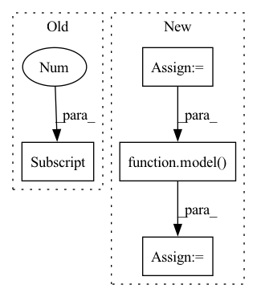

Pattern ID :30430
Before Change
print ("Input size", input.size())
center_img = vid_tensor_to_numpy(rgb_center_img_tensor*mask)[0]
center_img = cv2.cvtColor(center_img, cv2.COLOR_RGB2BGR)
center_img = cv_f32_to_u8(center_img)
After Change
center_img_salient = center_img_salient.unsqueeze(0)
if cuda:
center_img_salient = center_img_salient.to(device)
embedd = model( center_img_salient)
embeddings.append(embedd.detach().cpu())
vid_paths.extend(vid_path)
In pattern: SUPERPATTERN
Frequency: 5
Non-data size: 4
Instances Fragment ID: 90010877
Project Name: rvl-lab-utoronto/video_similarity_search
Commit Name: e5eeb446b18f40a7af123ef6d93ea24c32cc0538
Time: 2020-08-28
Author: salar77h@gmail.com
File Name: clustering/cluster_masks.py
M Class Name: AnonimousClass
N Class Name: AnonimousClass
M Method Name: get_embeddings_mask_regions(3)
N Method Name: get_embeddings_mask_regions(3)
M Parent Class:
N Parent Class:
M File Name: clustering/cluster_masks.py
N File Name: clustering/cluster_masks.py
M Start Line: 46
M End Line: 109
N Start Line: 51
N End Line: 127
Before Change
w_test = a_test[_].repeat_interleave(img.shape[0], dim=0)
// w_test = a_test_.sample((img.shape[0],))
if is_mlp:
img = img.view(img.shape[0] , -1)
output = model(img, w_test, fac).cpu().numpy()
outputs[_, index] = np.concatenate([output, label], axis=1)
After Change
indice = []
ret = []
for i, (img, label, _) in enumerate(loader):
img = img.cuda()
index = list(range(beg, beg + img.size(0)))
beg = beg + img.size(0)
label = label.numpy().reshape(-1, 1)
indice += [_]
for _ in range(num_bs):
w_test = a_test[_].repeat_interleave(img.shape[0], dim=0)
output = model( img, w_test.cuda()) .cpu().numpy()
outputs[_, index] = np.concatenate([output, label], axis=1)
ret += [outputs]
if with_acc:
pred = outputs.sum(0)[:, :-1].argmax(1)
label = outputs[0][:, -1]
acc = pred == label
print(f"[Test] acc : {acc.mean()}")
ret += [acc.mean()]
if with_indice:
ret += [torch.cat(indice)] Fragment ID: 90010908
Project Name: sungbinlim/neuboots
Commit Name: 482452e39a21d91892b4d24c84ef16529d0e0de0
Time: 2020-09-30
Author: phelahab@gmail.com
File Name: utils/jupyter.py
M Class Name: AnonimousClass
N Class Name: AnonimousClass
M Method Name: infer(7)
N Method Name: infer(8)
M Parent Class:
N Parent Class:
M File Name: utils/jupyter.py
N File Name: utils/jupyter.py
M Start Line: 90
M End Line: 115
N Start Line: 91
N End Line: 121
Before Change
for i_batch, (x,y) in enumerate(zip(input_data, input_label)):
x_good = x[0]
x_good = x_good.reshape((1, x.shape[1] , x.shape[-1]))
y_good = y[0]
y_good = y_good.reshape((1,1,1))
x_good = x_good.to(DEVICE)After Change
// x_recon = model(x_good.float(), y_good.float())
x = input_data
y = input_label
x_recon = model( x,y) // has shape [batch_size, seq_len, 159]
logging.info("xrecon has")
logging.info(x_recon.shape)
_, seq_len, _ = x.shape Fragment ID: 90010876
Project Name: bioshape-lab/pirounet
Commit Name: 149d8ab584d8a5bd20c5f508a727bb53b470cc0f
Time: 2022-05-17
Author: papillon@umail.ucsb.edu
File Name: move/generate_f.py
M Class Name: AnonimousClass
N Class Name: AnonimousClass
M Method Name: recongeneral(8)
N Method Name: recongeneral(8)
M Parent Class:
N Parent Class:
M File Name: move/generate_f.py
N File Name: move/generate_f.py
M Start Line: 367
M End Line: 382
N Start Line: 384
N End Line: 388
Before Change
model.eval()
out = model(target_img_tensor)
ps = torch.exp(out)
prediction_percentages = (ps.cpu().numpy()[0]) .tolist()
pred = prediction_percentages.index(max(prediction_percentages))
pred_labels.append(pred)
After Change
target_data_loader = torch.utils.data.DataLoader(target_data_set,batch_size=16,shuffle=False)
for i, (imgs, labels, path) in tqdm(enumerate(target_data_loader), total=len(target_data_loader)):
imgs = imgs.to(device)
labels = labels.to(device)
true_labels = true_labels+labels.tolist()
// print (imgs.shape)
with torch.no_grad():
model.eval()
out = model( imgs)
// ps = torch.exp(out)
ps = out
pr = [(i.tolist()).index(max(i.tolist())) for i in ps]
pred_labels = pred_labels+pr Fragment ID: 90010897
Project Name: radtorch/radtorch
Commit Name: 8122128d39112011e292071d336ed2e52abd8008
Time: 2020-03-01
Author: elbanan@users.noreply.github.com
File Name: radtorch/visutils.py
M Class Name: AnonimousClass
N Class Name: AnonimousClass
M Method Name: show_confusion_matrix(6)
N Method Name: show_confusion_matrix(6)
M Parent Class:
N Parent Class:
M File Name: radtorch/visutils.py
N File Name: radtorch/visutils.py
M Start Line: 312
M End Line: 327
N Start Line: 312
N End Line: 328
Before Change
out = model(target_img_tensor)
// ps = torch.exp(out)
ps = out
prediction_percentages = (ps.cpu().numpy()[0]) .tolist()
pred = prediction_percentages.index(max(prediction_percentages))
pred_labels.append(pred)
show_roc(true_labels, pred_labels, auc=auc, figure_size=figure_size)After Change
target_data_loader = torch.utils.data.DataLoader(target_data_set,batch_size=10,shuffle=False)
for i, (imgs, labels) in enumerate(target_data_loader):
imgs = imgs.to(device)
labels = labels.to(device)
true_labels.append(labels.tolist())
with torch.no_grad():
model.eval()
out = model( imgs)
// ps = torch.exp(out)
ps = out
print(ps.shape)
print (ps) Fragment ID: 90010899
Project Name: radtorch/radtorch
Commit Name: 74b5ef917af3aebdf033166bf8b81cbc9ceb9b6e
Time: 2020-03-01
Author: elbanan@users.noreply.github.com
File Name: radtorch/visutils.py
M Class Name: AnonimousClass
N Class Name: AnonimousClass
M Method Name: show_nn_roc(5)
N Method Name: show_nn_roc(5)
M Parent Class:
N Parent Class:
M File Name: radtorch/visutils.py
N File Name: radtorch/visutils.py
M Start Line: 199
M End Line: 216
N Start Line: 201
N End Line: 215